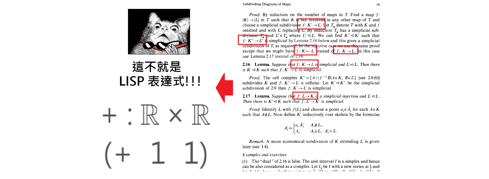

LISP語言的個人初探索（一）
難以回想第一次看到 lisp 語法的時候，自己所受到的衝擊有多麼之深，時間是2015 年初，當時我看到加法表示為：
$$ (+\ \ 1\ \ 1) $$
事實上我看到這個的第一眼，我想到的是在許多代數課本裡面常見的運算表示：
$$ + : \mathbb{R} \times \mathbb{R} $$
我心裡當下想：「哇！lisp 不就是我每天碰的代數理論，用程式碼表示出來的方式嗎？」
過沒幾分鐘，我就想：「對呀！這樣寫程式應該非常合理，我居然天天碰這樣的代數理論，卻從未想過程式可以這樣表達，太酷了。」

然後接著就是開始做了初步了解，關於 lisp 的一些近期發展（事實上當初我受到衝擊，是無意間看到某篇文章提到的 Clojure）
後來就陸續了解到了 Emacs，並選擇 Clojure 當做一個起始點先來玩玩看，就這樣入坑了。
所以比起許多人而言，是為了 clojure 可以使用 Java 的函式庫又可以進行函數式程式設計、或是為了處理並發問題（Concurrency）、又或是已經使用 LISP 相關語言一段時間，例如使用 Emacs 一段時間，小弟我著迷的點看起來真的十分奇怪，入坑姿勢也是十分迥異。
這也給我帶來非常大的挫折，因為像是 Emacs 或 Clojure 這些使用到 LISP 的編輯器和語言，學習起來超容易撞牆，除了一方面這個領域的高手基本上已經十分客製化自己使用 lisp 的習慣，因此網路上各種教學文章和討論都不是那麼簡單，要找到合適的入門教材也很不容易。二方面是使用 lisp 似乎於業界使用上非常少見，所以像我這樣初入坑的也找不到什麼太多知名的 lisp 的軟體和活動。
不過終究我還是因為這般不理性的執著，還是開始使用 Emacs 和 Clojure ，直到最近使用一段時間，開始反思之前沒搞清楚的問題。這就像是不計較女朋友的過往，但是交往一段時間之後還是想要知道，以前她的生活和回憶哈哈。